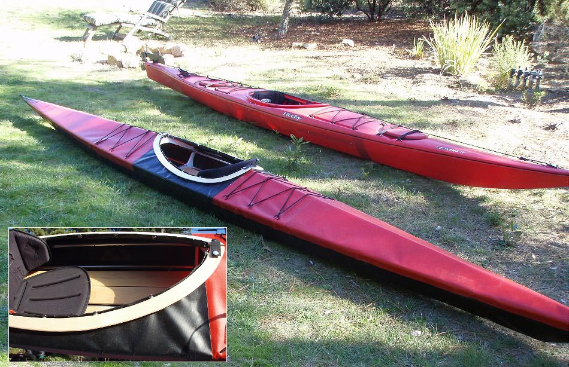

| Sea Tour 17 by Glen Haimovitz (US) | Menu Previous Page Next Page |
|

Glen, from Santa Cruz, California displays his Sea Tour 17 folder. He reports that it's very stable for ocean paddling. He used snap connectors to attach the skin to the coaming during assembly. Glen has also constructed a Sea Ranger ST folder for his wife. Use the (BACK) key to return.
|
|